Álbum de Fotos |
|||
Você pode colecionar fotos para colocar em seu Álbum, dentro da sua casa |
|||
| 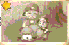 | Esta foto já vem no álbum por padrão |
||
| 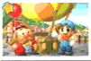 | Se você se tornar O Rei da Colheita/Harvest King no Festival da Colheita/Harvest Festival, no Festival da Semeadura da próxima Primavera você será escolhido para voar em um balão. Você terá esta foto no dia seguinte |
||
| 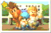 | Você terá esta foto ganahndo a Corrida de Cavalos |
||
| 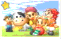 | Se você ganhar o Festival da Vaca/Cow Festival, deixe sua vaca fora no dia seguinte. Um grupo de garotas pararão e pedirão para tirar uma foto com ela. Você recebera está foto nos correios no dia seguinte. |
||
| 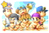 | Você terá esta foto ganhando o Festival de Natação/Swimming Festival |
||
| 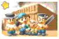 | Quando os carpinteiros pararem e pedirem a você para ajudar na construção das fontes termais, aceite a ajuda. Trabalhando com eles todo dia você terá esta foto |
||
| 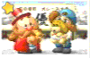 | Esta foto é por vencer a Corrida do Cachorro/Dog Race no Inverno |
||
| 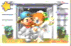 | Você receberá sua foto de casamento no dia depois do dia de seu casamento |
||
| 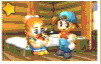 | Quando seu filho nascer, você terá esta foto no dia de seu nascimento |
||
| 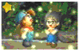 | Se você tem um coração amarelo ou rosa com Maria, Maria pedirá pra você ver os vaga-lumes com ela por volta do dia 10 de Verão. Aceite e você terá esta foto no seu correio |
||
| 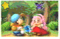 | Quando a Floricultura/Flower Shop começar a vender sementes Blue Mist na primavera do segundo ano, compre uma bolsa. Quando você comprar, você e Popuri plantarão as sementes na área próximo o lago da Deusa. Regue as sementes todo dia por aproximadamente uma semana e ela florescerá. Uma borboleta rara aparecerá próximo a flor. Você terá esta imagem no dia seguinte |
||
| 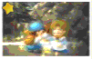 | Por volta da noite do dia 10 de Outono, Elli aparecera na sua porta e contará a você que ela tem algo para mostrar -- mas só se você ter ao menos um coração amarelo. Se você aceitar ir com ela, você fará a essência da lua nas monstanhas e terá esta foto no dia seguinte. |
||
| 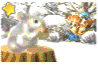 | Se você tem um coração amarelo ou rosa com Ann no começo do Inverno, você terá esta foto. No dia 2 - 5 de Inverno, ela prestará uma visita na manhã e pedira se você gostaria de ver um coelho pika raro. Aceite e você terá está foto |
||
| 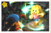 | Para ter esta foto, você precisará restaurar a vinícola, no qual está na seção de segredos. Na noite do dia 7 de Outono, Karen virá para sua fazenda contar a você que as Fadas Kifu estão na vinícola. Aceite ir com Karen e vocês dois verão as fadas abençoarem a vinícola. |
||
| 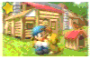 | Depois de você deve ter cada extensão da casa dos carpinteiros, você receberá esta foto nos correios |
||
| 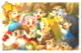 | Você deve ter umas certas obrigações no fim da terceira Primavera. São elas: |
||